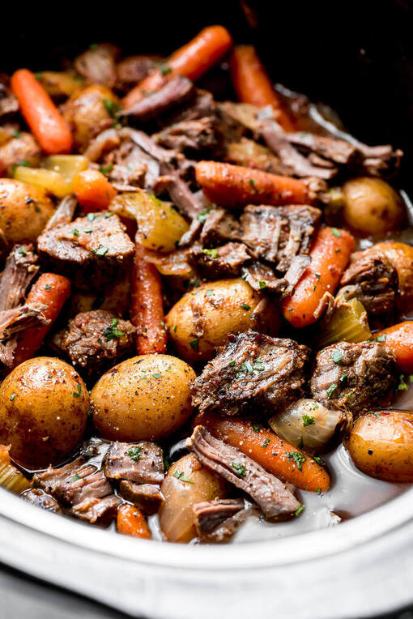

Beef Stew!
Beef Stew!

Scrumptious Slowcooker Beef Stew Courtesy of My Mom
This wonderful recipe is a must for anyone with a love of a delicious and easy beef stew. Start this stew in the morning and whether you are coming home from a hard day's work or a lazy day at the beach it is sure to be a welcome sight on arrival!
Ingredients:
- 2 Lbs. diced sirloin
- Salt, pepper
- 2 tablespoons olvie oil
- 3 cups beef broth
- 4 large carrots, cut diagonally into 1/2-inch-thick-slices
- 1 onion, diced
- 1 stalk celery, chopped
- 1 teaspoon Worsteshire Sauce
- 1 tablespoon minced garlic
- 1 Lb. red potatos quartered
- 2 handfuls of spinach
How To Make It!
- Heat olive oil in a large pan over medium heat.
- Season beef to taste and brown/Sear the sides of the diced sirloin.
- Throw everything into the crockpot and cook low and slow for 8 hours!
That's literally it! A very easy recipe that is sure to be a hit with family and friends!